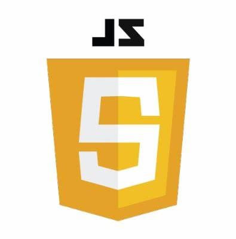
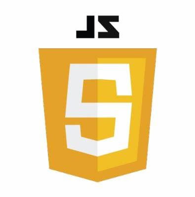

Psychologue du travail et consultante RH
ADHOC
Novembre 2021 - Avril 2022
Accompagnement en bilan de compétences : entretiens individuels, utilisation d'outils psychométriques, debriefing de test, gestion administrative des entrées en formation
Recrutement par approche directe : identification des candidats, approche téléphonique, entretiens téléphoniques, rédaction de comptes-rendus, rédaction de lettre de mission clients
Conseillère en évolution professionnelle
Pôle emploi
Novembre 2019 - Octobre 2021
Gestion d'un portefeuille de demandeurs d'emploi en modalité guidée puis renforcée
Entretiens individuels et ateliers collectifs
Diagnostic individualisé de la situation de chaque demandeur d'emploi
Accompagnement personnalisé dans l'objectif d'un retour à l'emploi durable : accompagnement à la recherche d'emploi, à la création d'entreprise, aide à l'orientation et à l'élaboration d'un projet professionnel, mobilisation des dispositifs de formation, travail en lien avec les partenaires
Connaissance du marché de l'emploi et travail sur les opportunités du territoire
Organisation d'événements en lien avec les plans d'action institutionnels


 
